Project Management - Gestione dei progetti di impianto
A partire da pagina 97 - Capitolo 4
Lezione 2020 11 10
Introduzione al Project Management
Con il capitolo sul project management abbiamo come obbiettivo quello di comprendere ed applicare in produzione i seguenti punti:
- Rispetto dei tempi di consegna
- Individuazione delle attività che condizionano la durata del progetto
- Minimizzazione del tempo di realizzazione
- Controllo dell'avanzamento del lavoro
- Eliminazione dei tempi morti
- Utilizzare al meglio la manodopera ed i mezzi tecnici
- Tempestivo afflusso dei materiali
Strumenti di base per il PM
Una delle caratteristiche principali del progetto di impianto è quella dell'indeterminazione della fase iniziale; ovviamente ci sono molti interrogativi su come progettare l'impianto, e per questo motivo si sono sviluppate delle vere e proprie tecniche per semplificarne (e strutturarne) l'organizzazione.
La fase del progetto di un impianto è composta da fasi che si susseguono tra di loro ed a volte vengono anche iterate diverse volte: è il caso dell'ingegnerizzazione iniziale e della costruzione; queste vengono iterate fino ad ottenere un risultato soddisfacente.
In questo contesto tutta la realizzazione del progetto viene scomposta a livelli sempre più bassi, fino ad arrivare alle attività elementari. Una singola attività è dotata di una durata, e quindi di un livello di partenza ed un livello di fine. Sapendo le interazioni e l'ordine con cui le attività si devono succedere, è possibile sapere con un buon anticipo:
- Quando rendere disponibili i mezzi finanziari per i pagamenti ai fornitori (ovvero tenere pronti i soldi)
- Quando i vari reparti dovranno essere pronti per iniziare i lavori
- Quando acquistare i materiali necessari all'avvio della produzione
Per poter strutturare il susseguirsi delle attività possiamo usare un diagramma a barre (bar chart), dove sull'asse delle ascisse vengono riportati i tempi, mentre sull'asse delle ordinate vengono riportate le varie attività:
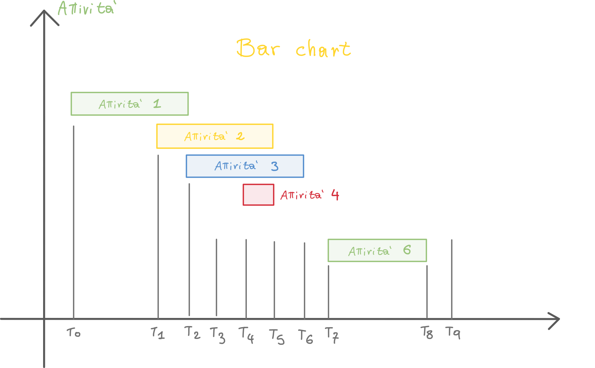
Il problema di questa organizzazione è che non vengono evidenziate le relazioni di dipendenza tra le attività e soprattutto l'organizzazione diventa problematica oltre la decina di attività.
Tecnica di programmazione reticolare: il PERT
L'obbiettivo del PERT è rendere l'organizzazione delle attività il più dinamica possibile (a differenza del diagramma di Gantt): il suo compito è quello di Minimizzare i tempi in modo da arrivare ad una data del completamento del progetto il prima possibile.
Il PERT ci permette di trasferire risorse dedicate ad ogni attività, andando a spostarle dalle attività non critiche (che possono essere ritardate) alle attività critiche (che non possono essere ritardate) in modo da poter accorciare i tempi.
Siccome il metodo precedente è un metodo per nulla soddisfacente, si è sviluppato un metodo molto più efficace e strutturato: il PERT - Program Evaluation and Review Technique.
Questo metodo consiste nell'utilizzare la teoria dei grafi (rappresentando quindi il progetto mediante un reticolo di attività ed eventi) per trovare il percorso critico (critical path), ovvero la successione di operazioni che condizionano la durata totale del progetto.
L'analisi del grafo con la tecnica PERT prevede le seguenti fasi:
- Analisi del progetto e raccolta dati
- Costruzione della Work Breakdown Structure
- Costruzione del reticolo (grafo)
- Elaborazione dei dati
- Ottimizzazione
Andiamo quindi a vedere nel particolare le varie fasi del PERT.
1. Analisi del progetto e raccolta dati
La prima fase del PERT è fondamentale: ci permette di avere un quadro generale del progetto e di mettere in evidenza le fasi principali del programma; in un primo momento individuiamo delle "macro attività", andando via via a specializzarle giungendo infine ad avere delle attività quanto più elementari possibile:
Un'attività si considera elementare quando riguarda operazioni che possono svolgersi con continuità nel tempo, ovvero senza avere interruzioni, spostamenti di luogo o cambiamenti di attrezzatura e/o manodopera.
In poche parole: un'attività è elementare quando arreca la minor perdita di tempo e di denaro possibile. (N.d.S.)
Dopo aver determinato le attività elementari, dobbiamo determinare per ciascuna di esse:
- Le attività che devono precederla
- Le attività che sono condizionate da essa
- La durata presumibile dell'attività
Regole fondamentali per la stesura del reticolo
E' opportuno seguire le seguenti regole fondamentali quando si stende il reticolo:
Ogni attività deve essere sempre preceduta e seguita da un evento; un evento deve essere sempre posto tra un'attività e la successiva, tranne per il primo e l'ultimo evento (che sono marginali).
Definizione di evento: l'istante in cui si verificano tutte le condizioni per cui le attività seguenti possono iniziare.
Se non si arriva all'evento che precede un'attività, questa non può avere inizio. Allo stesso modo se tutte le attività che precedono un evento non sono state completate, l'evento non si considera raggiunto.
Se ci sono dipendenze di tempo tra gli eventi, le dipendenze vengono rappresentate mediante attività fittizie di durata nulla.
Non sono ammessi loop: ovvero nessun evento può essere seguito da un'attività che riconduca, successivamente, allo stesso evento.
Tutte le attività sono seguite e precedute da almeno un'altra attività, ad eccezzione della prima ed ultima attività.
Attività fittizie
Le attività fittizie sono solitamente delle attese (ad esempio attesa di materiali necessari all'attività successiva). Se ad esempio abbiamo un reticolo del genere
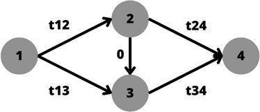
Se in questo particolare esempio abbiamo t13 < t12 l'evento 3 si verificherebbe prima dell'evento 2; andando a posizionare un'attività fittizia (quella che va da 2 a 3 con t=0), imponiamo che prima dell'evento 3 si deve verificare l'evento 2, anche se la durata dell'attività 1,2 è minore di quella 1,3.
Durata delle attività
Dobbiamo anche assegnare ad ogni attività una durata, scegliendo anche la più opportuna unità di tempo (ore, giorni, settimane).
Ovviamente la durata effettiva dipende principalmente da fattori esterni: ad esempio un'attività che comprende una colata di cemento può avere diverse durate a seconda dei fattori atmosferici: potrà impiegare 15 giorni se le condizioni sono ideali (ottimistiche) ma può anche impiegarne 30 se le condizioni sono sfavorevoli.
Dobbiamo quindi prevedere tre durate diverse, che vengono contrassegnate con le lettere:
- Durata ottimistica - a: Condizioni favorevoli
- Durata più probabile - m: Condizioni normali; è detta anche moda
- Durata pessimistica - b: condizioni sfavorevoli
Possiamo rappresentare la probabilità delle durate attraverso una distribuzione di probabilità:;utilizziamo la distribuzione Beta (o di Pearson):
Andiamo ad attribuire al valore medio - m la probabilità media, ovvero quella con la maggiore probabilità.
Andiamo a porre gli estremi della curva le durate ottimistiche e pessimistiche; in modo che queste coprano lo 0.5% (0.05) dell'area sottesa; in questo modo possiamo affermare chè:
- La durata ottimistica ha la probabilità minore al 0.5% di essere anticipata.
- La durata pessimistica ha la probabilità minore al 0.5% di essere superata.
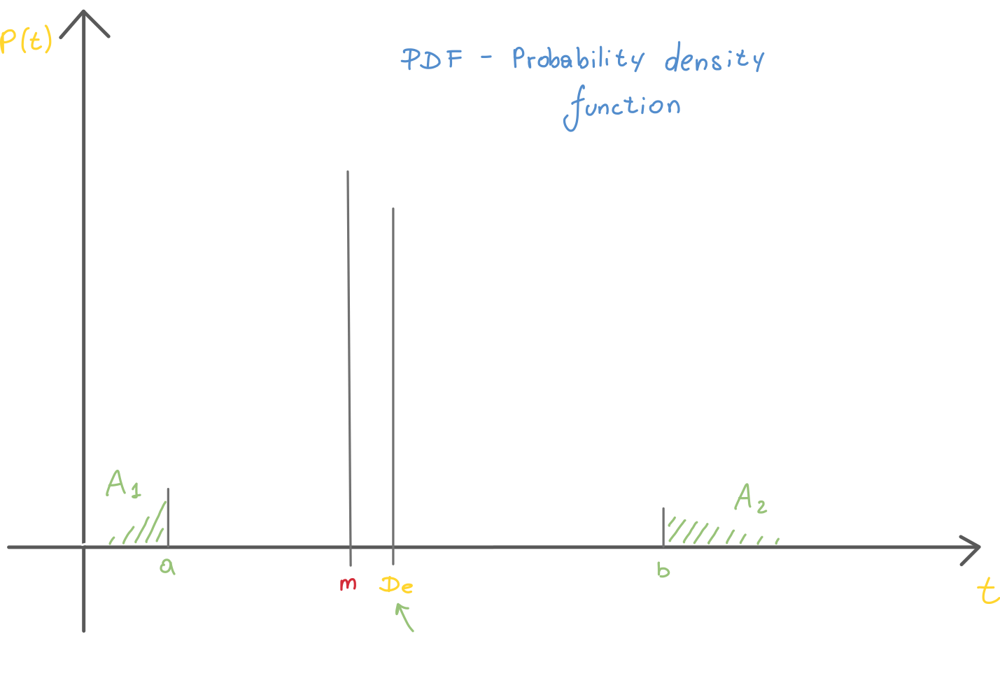
Per la costruzione del reticolo, utilizzeremo i valori risultanti dalla nostra distribuzione notevole: Valore atteso (durata attesa) e deviazione standard.
- Valore atteso - E' essenzialmente la durata media
- Deviazione standard - E' un valore numerico che ci dice quanto il valore atteso è attendibile: quanto più è bassa la S.D. quanto più sarà attendibile il valore atteso (media). In altre parole, quanto più sono vicini gli estremi a e b, tanto più il valore atteso sarà veritiero.
Possiamo calcolare valore atteso e deviazione standard con le formule della distribuzione notevole:
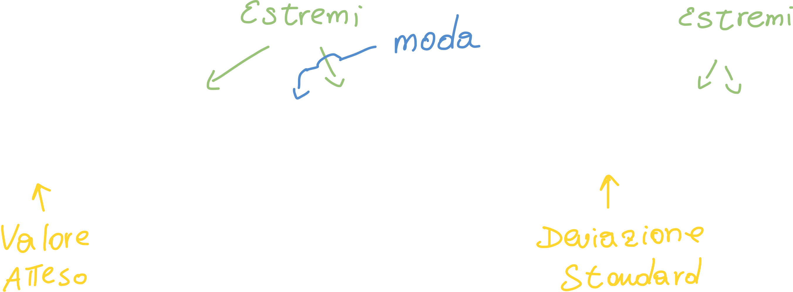
Possiamo quindi ricapitolare i dati che ci interessano:
- a - Estremo inferiore (durata minore meno probabile: è molto improbabile che i lavori richiedano meno tempo di a)
- b - Estremo superiore (durata maggiore meno probabile: è molto improbabile che i lavori richiedano più tempo di b)
- m - Moda: è il valore più probabile (probabilmente i lavori richiederanno un tempo m)
- De - Valore atteso (in media i tempi richiederanno un tempo De)
- σ - Deviazione standard: ci dice quanto De è attendibile (σ << bene, σ >> male)
2. La Work Breakdown Structure
La WBS è una tabella in cui:
- Vengono enumerate le attività
- Le attività vengono ordinate sequenzialmente seguendo la cronologia dei tempi
- Tempificazione delle attività
- Programmazione - si decide cosa fare, come farlo ed in quanto tempo.
La WBS è una struttura gerarchica che suddivide il lavoro del progetto in componenti sempre più piccole gestibili che prendono il nome di pacchetti di lavoro (work packages). La WBS può essere rappresentata con una struttura ad albero; capiamo quindi che usiamo una struttura gerarchica per organizzare il lavoro.
Come costrure la WBS
Indipendentemente dal progetto in atto, possiamo riconoscere dei passaggi comuni in ogni (o quasi) caso:
- L'Unione di tutti i Work Packages WP che appartengono ad uno stesso livello di disaggregazione ci da un livello di aggregazione superiore; in altre parole unendo un livello di nodi otteniamo la radice dei nodi (N.d.S.)
- Quanto più un Work Package è piccolo, tanto più sarà semplice da gestire da parte del responsabile ad esso assegnato; inoltre diminuiscono anche le relazioni di interfaccia tra di essi.
- Ci possono essere delle "sotto WBS": ad esempio gli attori esterni all'organizzazione del main contractor (ovvero l'appaltatore principale), come i fornitori/subappaltatori, sviluppano una WBS per conto loro.
Logica di disaggregazione
La disaggregazione avviene secondo la logica:
In un primo momento si individuano delle macro-fasi del progetto:

Succssivamente ogni macro-fase può essere ulteriormente scomposta secondo una logica specifica:
- Ingegneria di dettaglio - civile, elettrica, meccanica, etc.
- Approviggionamento - macchinari, tubature, etc.
- Montaggio - montaggi meccanici, montaggi elettrici, etc.
Un esempio di WBS in forma tabellare potrebbe essere la seguente, che ha tre livelli di dettaglio:
- Livello 1 - progetto principale
- Livello 2 - Fasi del progetto
- Livello 3 - Attività specifiche all'interno di ciascuna fase
| Livello | Attività | Descrizione | Attività Totali |
|---|---|---|---|
| 1 | Progetto XYZ | 8 | |
| 2 | Fase 1: Pianificazione | 2 | |
| 3 | 3.1 Raccolta requisiti | Identificazione dei requisiti del progetto | |
| 3 | 3.2 Definizione budget | Stima dei costi e assegnazione delle risorse | |
| 2 | Fase 2: Sviluppo | 2 | |
| 3 | 3.3 Progettazione | Progettazione dell'architettura del sistema | |
| 3 | 3.4 Codifica | Implementazione del codice | |
| 2 | Fase 3: Test | 2 | |
| 3 | 3.5 Test funzionali | Verifica delle funzionalità del sistema | |
| 3 | 3.6 Test di integrazione | Verifica dell'integrazione tra i moduli | |
| 2 | Fase 4: Implementazione | 2 | |
| 3 | 3.7 Installazione | Installazione del sistema presso il cliente | |
| 3 | 3.8 Formazione | Formazione degli utenti sul sistema |
3. Costruzione del reticolo
Rappresentiamo quindi le attività e gli eventi attraverso la notazione dei grafi:
- Nodo (un cerchio) -- > evento Con Ti indichiamo la data attesa dell'evento i con Tj indichiamo la data attesa dell'evento j
- Arco (una freccia) --> attività Con tij indichiamo il tempo necessario per il completamento dell'attività ij Essenzialmente, Ti e Tj sono gli estremi (sottoforma di date) dell'attività N.d.S.

Si utilizzano inoltre delle tecniche nel momento in cui il reticolo da costruire è particolarmente impegnativo: Si procede a ritroso partendo quindi dall'ultimo nodo (evento finale) individuando tutte le attività necessarie necessarie al compimento dell'evento finale.
Bisogna notare che la posizione dei nodi e la lunghezza degli archi è puramente simbolica, e non rappresenta alcun valore ai fini del PERT.

Inoltre si aggiungono delle informazioni aggiuntive al grafo:
- Data minima e massima dell'evento di inizio e di fine di ogni attività
- Slittamento di ogni attività
- Percorso critico
- Data di fine progetto
4. Calcolo dei dati e percorso critico
In questa fase andiamo ad elaborare il grafo mediante degli algoritmi che ci permettono di trovare il percorso critico:
Il Percorso Critico è il percorso più lungo (non è un errore) e rappresenta il tempo necessario per la completa esecuzione del progetto.
Si definisce ulteriormente come quel percorso che collega tutte le attività critiche e che porta alla data finale del progetto.
Per tutti gli altri percorsi alternativi a quello critico, si possono avere ritardi (scorrimenti) che non ritarderebbero in alcun modo il progetto.
Definiamo le seguenti sigle:
- EDi - Earliest Date - Indica il momento in cui l'evento potrebbe iniziare.
- LDi - Latest Date - Indica il momento in cui l'evento potrebbe finire.
- ESTik - Earliest Start Time - Indica l'istante di tempo (data, estremo inferiore) in cui l'attività potrebbe iniziare
- EFTik - Earliest Finish Time - Indica l'istante di tempo (data, estremo inferiore) in cui l'attività potrebbe essere completata.
- LSTik - Latest Start Time - Indica l'istante di tempo (data, estremo superiore) in cui l'attività potrebbe iniziare
- LFTik - Latest Finish Time - Indica l'istante di tempo (data, estremo superiore) in cui l'attività potrebbe essere completata.
ED - Earliest Date
EDi (Earliest Date) rappresenta la data prima della quale l'evento non può essere completato, tenendo conto delle dipendenze temporali e delle durate delle attività precedenti. Indica il momento in cui l'attività potrebbe iniziare.
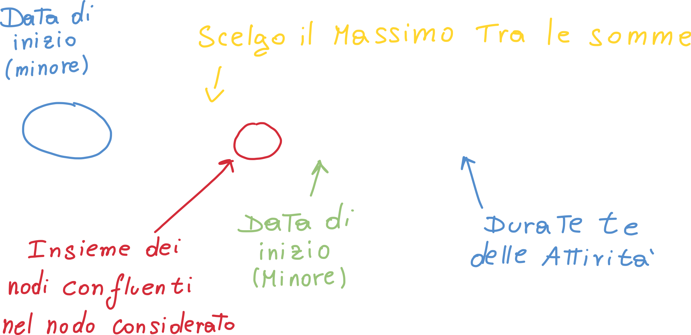
Nel caso elementare in cui abbiamo solo un'attività e due eventi avremmo:

Bisogna notare che tutte le date minime degli eventi che precedono (ovvero che sono sul cammino del nodo in esame) devono essere calcolate prima di calcolare la data minima del nodo in esame. Inoltre, in questo modo possiamo calcolare la data minima dell'evento finale, ovvero la data di fine del progetto.
LD - Latest Date
La latest date rappresenta la data oltre la quale l'evento non può verificarsi; infatti qualora l'evento si verificasse oltre questa data, andrebbe a rallentare l'intero progetto.
In questo caso, invece di dover calcolare tutte le date dei nodi precedenti a quello in esame, dobbiamo calcolare tutte le date dei nodi successivi a quello in esame. 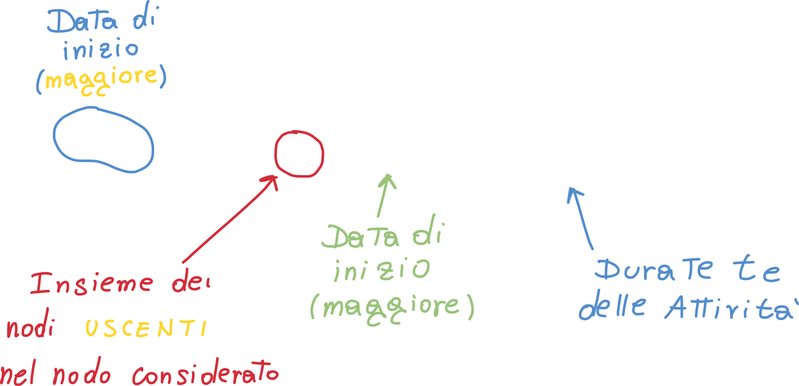
S - Slittamento totale
Si definisce slittamento o scorrimento la differenza tra la latest date (Lj) e la Earliest date (Tj) dello stesso elemento.
- Slittamento Sj = Lj - Tj
Lo slittamento dell'attività (o scorrimento ammissibile) è pari a:
- Sij = Lj - (Tj + tij)
Quest'ultimo valore di slittamento ci dice di quanto possiamo ritardare un'attività; questo valore avrà valori del tipo:
- Valore minimo: 0 - ovvero Lj è uguale alla somma tra parentesi - ci indica che l'attività ij non può essere ritardata: attività critica
- Positivo: se lo slittamento è maggiore di zero l'attività può essere ritardata.
- NON può essere minore di zero: se lo slittamento di un'attività fosse minore di zero, vuol dire che è un'attività che va in ritardo, ovvero che la latest date è minore della earliest + tij. In ogni caso un valore minore di zero indica un ritardo.
Una volta calcolate le date minime e massime per ciascun evento, possiamo calcolare lo slittamento totale, ovvero il l'intervallo di tempo del quale essa può essere ritardata senza avere ritardi sulla data finale del progetto.
Questo valore si calcola sottraendo alla data massima dell'evento di fine attività e la somma tra la data minima dell'evento di partenza (inizio attività) e la durata attesa dell'attività:

Quando la data massima e la data minima di un evento coincidono, allora siamo in presenza di un evento critico:
- LDi = EDi --> Evento Critico
Quando, calcolando il tempo di slittamento di un'attività, si ottiene zero, allora quell'attività è dette attività critica e quell'attività non permette alcun tipo di slittamento, altrimenti andrebbe a ritardare l'intero progetto:
- Sij = 0 --> Attività Critica - Indicata in grassetto sul grafo.
Se invece otteniamo un valore negativo per il tempo di slittamento di un'attività, allora quell'attività è detta ipercritica; questo risultato indica che non sarà possibile completare l'attività entro la latest date dell'evento finale.
- Sij < 0 --> Attività Ipercritica
Se un percorso è composto interamente da attività critiche, allora è detto anch'esso critico; questo vuol dire che qualora ci fosse un qualsiasi ritardo in una qualsiasi delle attività che lo compongono, genera un pari ritardo sulla data massima dell'evento finale del progetto.
5. Ottimizzazione - Critical Path Method

Possiamo rappresentare su un asse cartesiano i costi in funzione del tempo che ci si impiega ad ultimare un'attività. Vediamo come c'è un punto limite, che è quel punto in cui non si può ulteriormente ridurre il tempo di completamento detto tempo limite, anche utilizzando dutto il budget disponibile; questo corrisponde al costo limite, ovvero il costo massimo dell'attività.
Abbiamo anche un altro punto: il punto normale, ovvero quel punto dove si ha il costo minimo (ovvero il costo più basso dell'attività), ma anche il tempo normale.
Possiamo infine approssimare linearmente (ovvero unire le coordinate corrispondenti al punto limite e punto normale) la curva nell'intervallo TL - TN in modo da poter approssimare il suo coefficiente angolare: questo valore ci dice l'incremento di costo diretto per unità di tempo. Il nostro compito è quello di scegliere per la riduzione del tempo di realizzazione le attività aventi il coefficiente α minore:
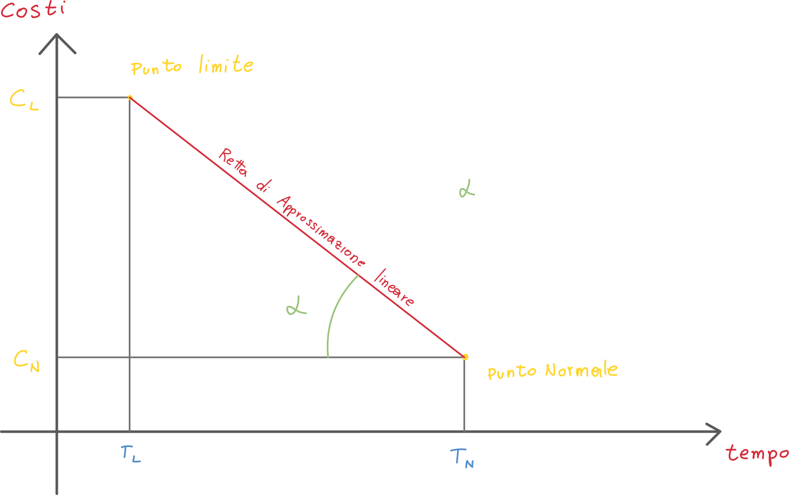
Chiamiamo α costo di accelerazione; a seconda di questo valore avremo:
- Costo accelerazione positivo: Indica che accelerare l'attività richiederà risorse finanziarie aggiuntive. Ciò significa che investire ulteriori risorse per completare l'attività in un tempo più breve comporterà costi aggiuntivi.
- Costo accelerazione negativo: Indica che accelerare l'attività può portare a risparmi finanziari.
- Costo accelerazione uguale a zero: Indica che non ci sono implicazioni finanziarie dirette associate all'accelerazione dell'attività.
Esempio di applicazione di PERT e CPM
Usiamo i dati delle tabelle:
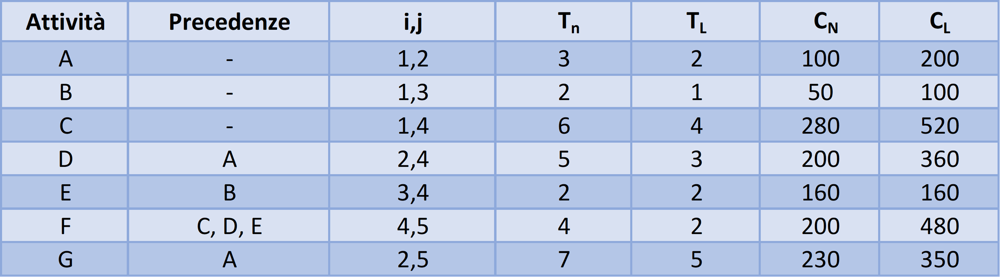
WBS

Durate-costi
Bisogna tenere conto che la riga dei premi ha dei valori circondati da parentesi: questi sono valori che andranno sottratti al conto finale, perchè sono degli incentivi, non penali!
Otteniamo il grafo dalla tabella del WBS:

Siccome la durata del progetto totale,
Possiamo calcolare i costi di accelerazione mediante la formula vista in precedenza; su excel abbiamo:
xxxxxxxxxx=IFERROR((Table1[@CL]-Table1[@CN])/(Table1[@Tn]-Table1[@TL]);0)Otteniamo la tabella dei costi di accelerazione
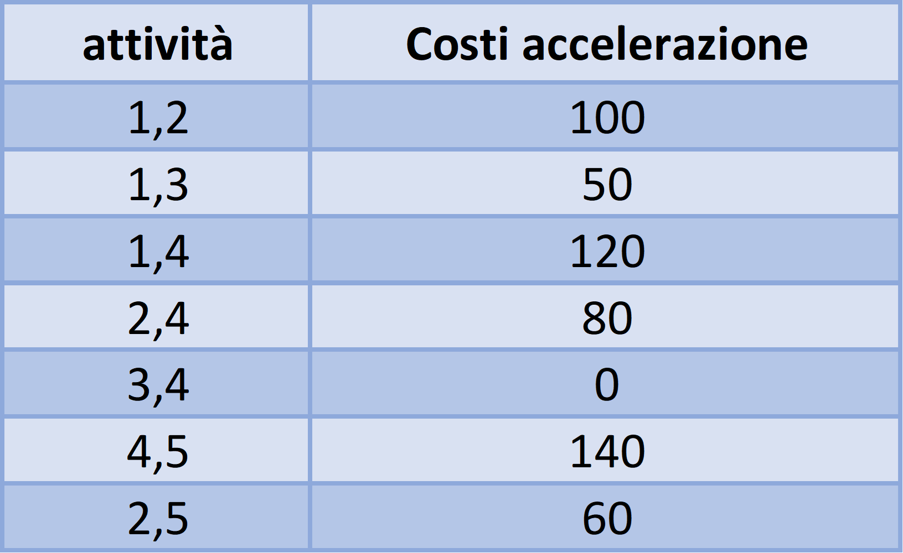
Possiamo sommare il totale dei costi normali della tabella della WBS (1220) ai valori corrispondenti alla durata (12) della tabella dei costi (penali + canoni = 400 + 1200 = 1600) ottenendo i costi diretti pari a 2820 unità di moneta.
Dopo aver calcolato questo valore, guardiamo la tabella delle accelerazioni e cerchiamo di velocizzare il progetto andando a pescare tra le attività che hanno il costo di accelerazione più basso; siccome l'attività 3,4 ha un costo di accelerazione zero, la ignoriamo. Prendiamo in considerazione invece l'attività 1,3:

Notiamo come questa decisione si ripercuota su gran parte del grafo e sul tempo totale, che passa da 12 ad 11. Di conseguenza, i costi passano da 2820 a 2270:
Esercizio aggiuntivi al seguente link.
Dalla lezione
Lezione 2020 11 10 01:00
Il reticolo viene costruito sempre a partire dalla fine, ovvero dall'ultimo evento: quello di consegna del progetto.
Strutturare il reticolo
Si parte sempre dalla latest date

In questo caso, nell'evento 6 abbiamo una latest date di 17 unità di tempo (le consideriamo come settimane, la latest date è riportata nella posizione in alto a destra delle croci).
Successivamente andiamo a ritroso: l'attività che va da 5 a 6 si compie in 3 settimane, quindi la latest date dell'evento 5 è data da
LD5 = 17 - 3 = 14--> l'attività 5 si compie in 14 settimane.Tra parentesi possiamo trovare lo slittamento: l'attività 5-6 può essere completata in 3 unità di tempo, ma ammette uno slittamento di 6 unità di tempo. L'attività 4-6, invece, deve essere completata in 5 settimane, ma ha slittamento zero: è un'attività critica. Questo ci porta a dire che la latest date dell'evento 4 è 17 - 5 = 12.
Le attività critiche vengono indicate in grassetto, come avviene in figura.
Osserviamo che l'evento 3 non può essere completato finché non si completa l'evento 2: l'attività 2-3 è un'attività dummy (a durata nulla).
La Latest Date dell'evento 3 viene calcolata a partire dall'attività 3-4 e 4-6: questo perché l'attività 3-4 ha tempo di completamento maggiore rispetto all'attività 3-5. Nel calcolo della latest date dobbiamo sempre prendere il percorso massimo.
Anche nel caso dell'evento 2 la latest date viene calcolata a partire dal percorso maggiore: invece di prendere 2-4-6 (ovvero 17 - 5 - 6 = 6), scegliamo 2-3-4-6 (ovvero 17 - 5 - 7 = 5)
Il percorso critico
Nel nostro caso il percorso critico è dato dalla sequenza Critical Path = 1-3-4-6: il ritardo di anche una sola attività conduce al ritardo del progetto.
Infatti, il ritardo di anche una sola attività si ripercuote su tutte le altre: se ritarda l'attività 1-3, l'attività 3-4 comincerà in ritardo, poi ritarderà anche la 4-6, e di conseguenza manda in ritardo anche l'evento 6, ovvero la fine del progetto.
Ridistribuire le risorse - il PERT e CPM
Una volta realizzato il reticolo cerchiamo di ridistribuire le risorse: le attività critiche che hanno problemi di completamento e che potrebbero ritardare l'intero progetto, necessitano di ulteriori risorsi, che andiamo ad attingere dalle attività non critiche.
Cosa ci serve?
- Durata minima del progetto
- Conoscere gli eventi ed attività critiche
- Scorrimenti
Il Critical Path Method - CPM
Utilizziamo diversi valori del tempo:
- TA - Tempo abituale: il tempo misurato senza alcuna ottimizzazione
- TN - Tempo Normale: tempo ottenuto dopo aver ottimizzato il più possibile il lavoro
- TL - Tempo Limite: è il tempo al di sotto del quale non si può più andare. Possiamo quindi investire tutte le risorse possibili, ma non riusciremo mai a sfondare questa soglia.
Definiamo costo di accelerazione il valore:
- CA = (CL - CN) / (TN - TL)
Che si ricava da una tabella; il costo di accelerazione è essenzialmente la retta che si ottiene dalla curva dei costi (vedi il punto 5).